Bab 1
Instalasi Sistem Operasi Ubuntu
Tujuan
Setelah menyelesaikan bab ini pembaca diharapkan dapat:
- Memahami langkah-langkah dasar dalam instalasi sistem operasi Ubuntu.
- Menyiapkan lingkungan yang sesuai untuk instalasi Ubuntu pada perangkat keras.
- Melakukan instalasi sistem operasi Ubuntu pada PC/Laptop.
Ubuntu adalah salah satu distribusi Linux yang populer, digunakan secara luas karena kemudahan penggunaannya dan dukungan komunitas yang besar. Pada bab ini anda akan mempelajari bagaimana mengunduh, menyiapkan, dan instalasi Ubuntu pada PC/Laptop.
Persiapan Instalasi
Sebelum melakukan instalasi, ada beberapa hal yang perlu disiapkan :
-
Spesifikasi Minimum:
- Prosesor : Dual-core 2 GHz
- RAM : 4 GB (direkomendasikan 8 GB)
- Penyimpanan : 25 GB ruang kosong
- USB flash drive (minimal 8 GB)
- Koneksi internet (opsional)
-
Mengunduh ISO Ubuntu:
- Buka situs resmi Ubuntu di http://ubuntu.com.
- Pilih Ubuntu desktop, misalnya Ubuntu Desktop 22.04 LTS.
- Klik link yang tersedia untuk mendapatkan file ISO.
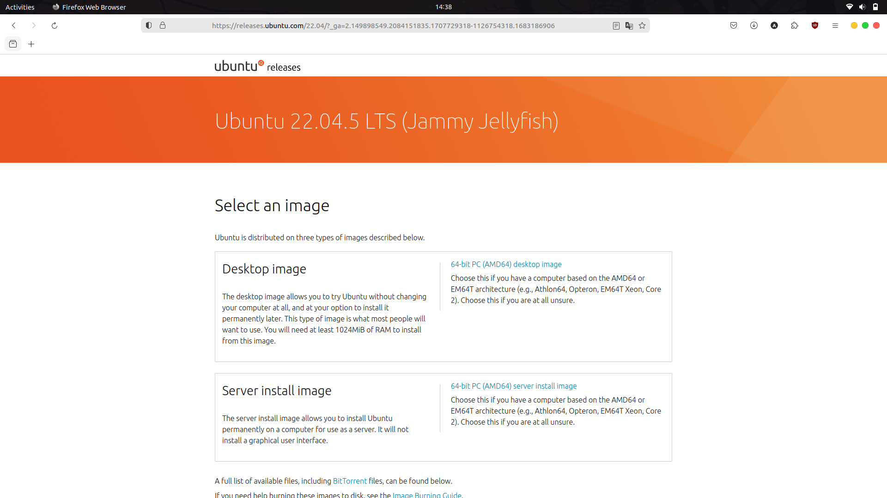
-
Membuat Bootable USB
Alat yang diperlukan untuk membuat bootable USB
- Perangkat Lunak
- Etcher (tersedia untuk Windows, MacOS dan Linux), dapat didownload pada link berikut etcher.balena.io
- Perangkat Keras
- USB Flashdrive minimal 8 GB.
Langkah-Langkah Membuat Bootable USB
-
Sambungkan USB flash drive minimal 8 GB ke komputer.
-
Buka aplikasi Etcher yang sudah diunduh dan diinstal.
-
Pada tampilan utama Etcher, klik Select Image dan pilih file ISO Ubuntu yang telah diunduh.
-
Klik Select Target dan pilih USB yang akan digunakan sebagai media instalasi.
-
Klik Flash! untuk memulai proses pembuatan bootable USB.

-
Tunggu hingga proses selesai, dan lepaskan USB setelah flash selesai.
- Perangkat Lunak
Langkah-Langkah Instalasi Sistem Operasi Ubuntu
-
Booting dari USB
-
Sambungkan USB bootable ke Laptop/PC.
-
Restart komputer dan masuk ke BIOS/UEFI dengan menekan tombol seperti F2, F12, atau Del. Tombol akses BIOS/UEFI dapat dilihat pada tabel berikut :
Merk Laptop/PC Tombol Akses Acer F1, F2, atau CTRL+ALT+ESC ASUS f2 Axioo f2 Dell F2, Del, F12, F1, F3, atau Fn+F1 Fuijitsu f2 HP/Compaq ESC, F10, atau F1 Lenovo F2 atau Fn+F2 MSI Del Samsung f2 Sony Vaio F1, F2, atau F3 Toshiba F2, ESC+F1, atau F2+power Zyrex Del atau Esc -
Ubah urutan booting agar USB menjadi prioritas pertama.
-
Simpan pengaturan dan keluar dari BIOS/UEFI.
-
-
Memulai Instalasi
-
Setelah komputer melakukan booting dari USB, pilih Install Ubuntu.

-
Pilih bahasa yang akan digunakan dan klik Continue.
-
-
Pengaturan Instalasi
-
Keyboard Layout: Pilih tata letak keyboard yang sesuai dan tekan Continue.

-
Updates and Other Software: Pilih apakah ingin menginstall pembaruan dan perangkat lunak pihak ketiga selama instalasi seperti codec multimedia.

-
Installation Type :
- Install Ubuntu alongside [OS lama] untuk dual boot.
- Erase disk and install Ubuntu untuk menggantikan sistem operasi yang ada.
- Something else untuk membuat kustomisasi partisi instalasi secara manual.
-
Time Zone: Pilih zona waktu sesuai lokasi dan klik Continue.

-
-
Konfigurasi Pengguna
-
Masukkan nama pengguna dan password yang diinginkan.
-
Pilih metode login, apakah otomatis atau manual kemudian klik Continue.
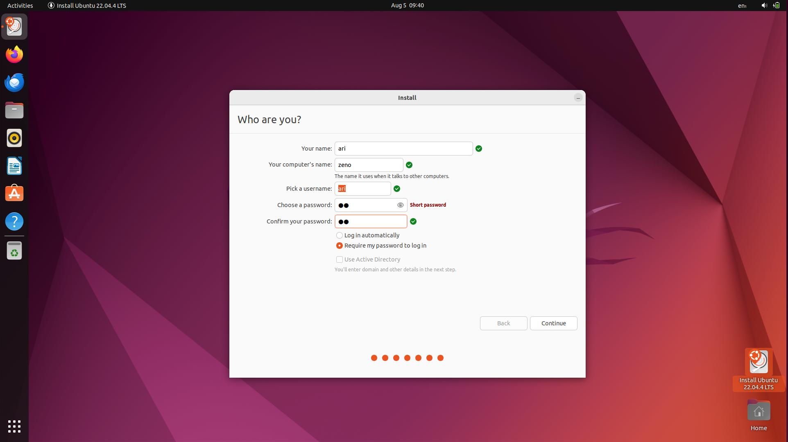
-
-
Proses Instalasi dan Penyelesaian
-
Setelah semua pengaturan selesai, proses instalasi akan dimulai.

-
Tunggu hingga instalasi selesai. Setelah itu klik Restart Now.
-
Lepaskan USB ketika komputer melakukan restart.
-
Bab 2
Berkenalan dengan Ubuntu 22.04 LTS
Tujuan
Setelah menyelesaikan bab ini pembaca diharapkan dapat:
- Memahami antarmuka pengguna dan fitur-fitur umum Ubuntu.
Ubuntu 22.04 menggunakan lingkungan desktop GNOME versi 42 yang menawarkan antarmuka modern dan intuitif. Saat pengguna pertama kali masuk ke sistem mereka akan disambut oleh tampilan desktop yang bersih dengan panel atas yang menampilkan jam, pengaturan sistem, dan indikator status, serta dock di sisi kiri layar yang berisi pintasan ke aplikasi-aplikasi utama.

Top Bar/Panel Atas
Top bar adalah panel horizontal yang berada di bagian atas layar. Fitur ini menampilkan jam dan tanggal di bagian tengah.

Kemudian di sisi kanan terdapat indikator baterai, volume, jaringan, dan menu sistem. Melalui menu ini pengguna dapat mengakses pengaturan, mengunci layar, logout, atau mematikan perangkat.

Top bar bersifat statis dan selalu tampak sehingga memudahkan pengguna untuk memantau status sistem.
Dock
Dock adalah panel vertikal di sisi kiri layar yang berisi ikon-ikon aplikasi favorit dan aplikasi yang sedang berjalan. Pengguna dapat menambahkan atau menghapus aplikasi dari Dock sesuai kebutuhan. Letak Dock bisa diubah ke bawah atau kanan melalui pengaturan sistem. Dock memberikan kemudahan akses terhadap aplikasi yang sering digunakan.

Show Applications
Tombol Show Applications berada di bagian bawah Dock dan berfungsi untuk menampilkan seluruh aplikasi yang terpasang.
Setelah diklik pengguna dapat melihat grid aplikasi dan mencari aplikasi tertentu dengan mengetikkan namanya di kolom pencarian. Fitur ini mempercepat proses pencarian dan peluncuran aplikasi.
Activities Overview
Activities Overview dapat diakses dengan menekan tombol Super (biasanya logo Windows) atau mengarahkan kursor ke pojok kiri atas layar. Tampilan ini menampilkan semua jendela yang sedang aktif serta memungkinkan pengguna untuk mengatur dan berpindah antar workspace (desktop virtual). Fitur ini sangat berguna untuk multitasking dan manajemen jendela.

Touchpad Gestures
Ubuntu 22.04 mendukung berbagai gestur touchpad yang meningkatkan kenyamanan penggunaan, terutama pada laptop. Beberapa gestur umum yang tersedia antara lain:
- Geser tiga jari ke atas: membuka Activities Overview
- Geser tiga jari ke kiri atau kanan: berpindah antar workspace
Bab 3
Filesystem dan File Manager
Tujuan
Setelah menyelesaikan bab ini pembaca diharapkan dapat:
- Memberikan pemahaman tentang struktur file system di Linux/Ubuntu.
- Menjelaskan cara penggunaan file manager (Nautilus) untuk mengelola file dan folder.
Struktur File System di Linux
Berbeda dengan sistem operasi Windows yang menggunakan huruf drive seperti C:\ dan D:, Linux menggunakan struktur hirarki pohon yang dimulai dari root directory (/). Semua file dan direktori berada di bawah direktori root.
Di bawah root terdapat sejumlah direktori standar yang memiliki fungsi spesifik. Berikut penjelasan direktori utama yang umum ditemukan:
| Folder | Keterangan |
|---|---|
| /bin | Berisi binary atau executable file untuk perintah dasar Linux yang bisa digunakan semua user |
| /boot | Berisi file yang diperlukan untuk proses booting Linux, termasuk kernel |
| /dev | Penyimpan file khusus yang merepresentasikan perangkat keras (device) seperti USB, harddisk, dll |
| /etc | Direktori untuk menyimpan file konfigurasi sistem |
| /home | Berisi folder pribadi untuk setiap user yang terdaftar di sistem |
| /lib | Menyimpan library penting untuk program di /bin dan /sbin |
| /media | Lokasi otomatis untuk mounting media eksternal (USB, CD/DVD) |
| /mnt | Tempat untuk mounting filesystem secara manual |
| /opt | Lokasi opsional untuk software tambahan dari pihak ketiga |
| /proc | Virtual filesystem yang menampilkan informasi kernel dan proses |
| /root | Home directory untuk superuser (root) |
| /run | Direktori penyimpanan informasi runtime sistem |
| /sbin | Berisi program untuk administrasi sistem |
| /srv | Menyimpan data untuk layanan server seperti web atau FTP |
| /tmp | Direktori penyimpanan file sementara |
| /usr | Menyimpan program, library, dan dokumentasi tambahan |
Penggunaan File Manager
Ubuntu menyertakan file manager grafis yang bernama Nautilus. Nautilus adalah aplikasi yang memungkinkan pengguna untuk mengelola file dan folder secara visual mirip seperti Windows Explorer. Dengan Nautilus pengguna dapat dengan mudah mengelola file dan folder tanpa perlu mengetik perintah di terminal.
Untuk membuka Nautilus klik ikon Files yang terletak pada Dock di sisi layar.

Alternatif lainnya tekan tombol Super (biasanya bergambar logo Windows pada keyboard) kemudian ketik “Files” atau “Nautilus” pada kolom pencarian aplikasi kemudian tekan Enter.
Setelah terbuka Nautilus akan menampilkan struktur direktori dan file yang dapat dikelola dengan mudah melalui klik atau pintasan keyboard.

Membuat Folder Baru
Untuk membuat folder baru buka Nautilus dan navigasikan ke lokasi tujuan, misalnya direktori Documents. Klik kanan pada area kosong lalu pilih menu New Folder.

Setelah itu sebuah folder baru akan muncul dan dapat langsung diberi nama sesuai kebutuhan.
Pembuatan folder juga dapat dilakukan dengan lebih cepat menggunakan kombinasi tombol Ctrl + Shift + N. Membuat folder baru berguna untuk mengelompokkan file berdasarkan jenis atau topik tertentu sehingga organisasi dokumen menjadi lebih terstruktur.
Menyalin atau Memindahkan File
Untuk menyalin file klik kanan file tersebut lalu pilih Copy, sedangkan untuk memindahkan file pilih Cut.
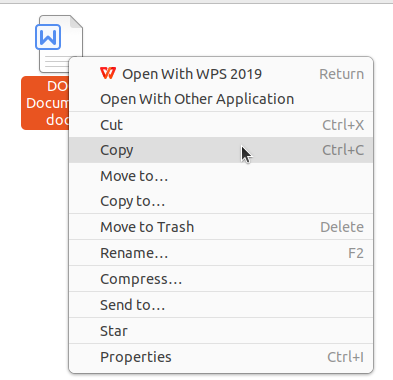
Setelah itu buka folder tujuan kemudian klik kanan dan pilih Paste.

Operasi ini juga dapat dipercepat menggunakan shortcut Ctrl + C untuk menyalin, Ctrl + X untuk memotong, dan Ctrl + V untuk menempelkan file.
Memindahkan File Menggunakan Drag and Drop
File atau folder dapat dipindahkan dengan mudah menggunakan teknik drag and drop. Buka satu lagi jendela Nautilus sebagai lokasi kemudian pilih file yang diinginkan, tekan dan tahan klik kiri lalu seret file tersebut ke lokasi tujuan kemudian lepaskan.
Menghapus File
Menghapus file dalam Nautilus dapat dilakukan dengan klik kanan pada file dan memilih opsi Move to Trash.
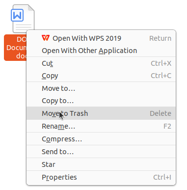
Untuk kepraktisan file juga dapat langsung dipindahkan ke Trash dengan menekan tombol Delete pada keyboard. File yang dihapus tidak langsung hilang melainkan disimpan sementara di dalam direktori Trash hingga benar-benar dihapus permanen. Jika ingin menghapus file secara permanen dapat menggunakan shortcut Shift + Delete.
Melihat Detail File
Untuk melihat rincian file seperti ukuran, jenis, lokasi, dan hak akses, klik kanan file atau folder lalu pilih Properties atau dapat menggunakan shortcut Alt + Enter.
Menampilkan File dan Folder Tersembunyi
Untuk menampilkan file atau folder tersembunyi tekan kombinasi Ctrl + H saat berada di jendela Nautilus. File tersembunyi biasanya diawali dengan tanda titik (.). Tekan kembali Ctrl + H untuk menyembunyikannya.
Kombinasi Tombol Nautilus
Setelah memahami berbagai fungsi dasar Nautilus sebagai pengelola file di Ubuntu penting juga untuk mengenal shortcut yang tersedia untuk mempercepat navigasi dan manajemen file. Shortcut ini mempermudah interaksi dengan file manager tanpa perlu banyak menggunakan mouse sehingga meningkatkan efisiensi kerja. Berikut ini adalah tabel shortcut penting yang dapat digunakan dalam Nautilus:
| No | Kombinasi Tombol | Fungsi |
|---|---|---|
| 1 | Ctrl + N | Membuat jendela Nautilus baru |
| 2 | Ctrl + Shift + N | Membuat folder baru |
| 3 | Ctrl + C | Menyalin file atau folder |
| 4 | Ctrl + X | Memotong (cut) file atau folder |
| 5 | Ctrl + V | Menempel (paste) file atau folder |
| 6 | Delete | Mengirim file atau folder ke Trash |
| 7 | Shift + Delete | Menghapus file atau folder secara permanen |
| 8 | Ctrl + H | Menampilkan atau menyembunyikan file tersembunyi |
| 9 | Ctrl + F | Membuka kolom pencarian file atau folder |
| 10 | Alt + Enter | Melihat properti file atau folder |
| 11 | Alt + Up Arrow | Naik ke direktori induk |
| 12 | Alt + Left Arrow | Kembali ke direktori sebelumnya |
| 13 | Alt + Right Arrow | Maju ke direktori berikutnya |
| 14 | F2 | Mengganti nama (rename) file atau folder |
| 15 | Ctrl + L | Memunculkan path lokasi dalam bentuk teks |
| 16 | F9 | Menampilkan atau menyembunyikan panel sidebar |
| 17 | Tab | Menampilkan atau menyembunyikan panel sidebar |
Bab 4
Metode Instalasi Program Aplikasi
Tujuan
Setelah menyelesaikan bab ini pembaca diharapkan dapat:
- Menginstal perangkat lunak menggunakan GUI dan CLI pada Ubuntu.
Instalasi Aplikasi di Ubuntu Menggunakan GUI dengan Ubuntu Software
Tujuan
Setelah menyelesaikan bab ini pembaca diharapkan dapat:
- Menginstal perangkat lunak menggunakan GUI pada Ubuntu menggunakan Ubuntu Software.
Langkah-Langkah Instalasi Melalui GUI dengan Ubuntu Software
-
Buka Ubuntu Software
Ubuntu Software merupakan tempat untuk mencari dan melakukan instalasi aplikasi yang tersedia secara resmi di repositori Ubuntu. Untuk membukanya, klik ikon Ubuntu Software yang biasanya ada di dock (panel samping kiri) atau cari melalui menu Applications. -
Cari Aplikasi yang Ingin di Install
Setelah aplikasi terbuka, terdapat kotak pencarian di bagian kiri atas. Gunakan fitur pencarian ini untuk mengetik nama aplikasi yang ingin diinstal, seperti "Android Studio". Ubuntu Software akan menampilkan hasil pencarian yang relevan. -
Pilih Aplikasi dan Install
Setelah menemukan aplikasi yang diinginkan, klik pada aplikasi tersebut untuk membuka halaman rincian. Di sini anda akan melihat informasi tentang aplikasi, termasuk ukuran, ulasan pengguna, dan pengembangnya. Untuk memulai instalasi tekan tombol Install.
-
Masukkan Password
Karena penginstalan perangkat lunak memerlukan hak akses administrator, anda akan diminta untuk memasukkan password pengguna. Masukkan password akun yang memiliki hak administratif pada sistem, lalu klik Authenticate. -
Proses Instalasi
Setelah otorisasi berhasil, proses instalasi akan dimulai. anda dapat melihat progress bar yang menunjukkan status instalasi. Jika perangkat lunak yang diinstal memiliki dependensi tambahan, Ubuntu Software akan otomatis mengunduh dan melakukan instalasi juga.
Instalasi Aplikasi di Ubuntu Menggunakan GUI dengan Synaptic Package Manager
Tujuan
Setelah menyelesaikan bab ini pembaca diharapkan dapat:
- Menginstal aplikasi menggunakan GUI pada Ubuntu dengan Synaptic Package Manager.
Langkah-Langkah Instalasi Melalui GUI dengan Synaptic Package Manager
-
Buka Synaptic Package Manager
Untuk membuka Synaptic Package Manager dapat ditemukan pada menu applications atau menjalankan perintahsudo synapticpada terminal.
-
Cari Aplikasi yang Diinginkan
Di dalam Synaptic gunakan kotak pencarian di pojok kanan atas untuk mencari aplikasi. Misalnya ketik GIMP untuk mencari aplikasi pengolah gambar.
-
Memilih Paket untuk Instalasi
Setelah menemukan aplikasi yang diinginkan, klik kanan pada nama aplikasi tersebut dan pilih Mark for Installation. Synaptic akan menampilkan daftar paket dan dependensi yang diperlukan untuk aplikasi tersebut, yang juga akan ditandai untuk diinstal. Proses penandaan ini memastikan bahwa semua kebutuhan aplikasi sudah terpenuhi sebelum diinstal.
-
Konfirmasi Instalasi
Setelah aplikasi ditandai, klik tombol Apply di toolbar bagian atas untuk memulai proses instalasi.
Sebuah jendela konfirmasi akan muncul, menampilkan daftar aplikasi dan dependensi yang akan diinstal. Klik Apply sekali lagi untuk melanjutkan instalasi.
Synaptic kemudian akan mengunduh dan menginstal aplikasi serta dependensi yang diperlukan.

-
Menyelesaikan Instalasi
Setelah proses instalasi selesai, anda dapat menemukan aplikasi di menu Applications. Dengan Synaptic aplikasi dan semua dependensinya telah diatur dan aplikasi siap digunakan. Jika aplikasi memerlukan pembaruan di masa mendatang, Synaptic akan menampilkannya di daftar pembaruan.
Instalasi Aplikasi di Ubuntu Menggunakan CLI dengan APT
Tujuan
Setelah menyelesaikan bab ini pembaca diharapkan dapat:
- Menginstal perangkat lunak menggunakan CLI pada Ubuntu dengan APT.
Langkah-Langkah Instalasi Melalui CLI dengan APT
-
Buka Terminal
Untuk mengakses CLI, buka terminal dengan menekan kombinasi tombolCtrl + Alt + Tatau cari "Terminal" di menu Applications. Terminal akan terbuka dan siap menerima perintah. -
Perbaruan daftar paket
Sebelum melakukan instalasi aplikasi penting untuk memperbarui daftar paket agar sistem memiliki informasi terbaru tentang perangkat lunak di repositori. Jalankan perintahsudo apt updatekemudian masukkan password ketika diminta, kemudian sistem akan mengunduh daftar paket terbaru. -
Install Aplikasi
Setelah daftar paket diperbarui anda dapat melakukan instalasi aplikasi dengan perintahapt install. Sebagai contoh untuk instalasi VirtualBox jalankan perintahsudo apt install virtualbox, sistem akan mengunduh dan melakukan instalasi aplikasi beserta dependensinya.
-
Konfirmasi Instalasi
Jika ada konfirmasi untuk melanjutkan instalasi, sistem akan menampilkan prompt yang meminta anda mengetik "y" (yes) untuk melanjutkan. Tekan y dan Enter untuk konfirmasi. -
Instalasi Selesai
Setelah proses selesai, aplikasi siap digunakan. Aplikasi yang telah diinstal dapat ditemukan di menu Applications, atau bisa langsung dibuka melalui terminal dengan mengetik nama aplikasinya.
Instalasi Aplikasi di Ubuntu Menggunakan CLI dengan FLATPAK
Tujuan
Setelah menyelesaikan bab ini pembaca diharapkan dapat:
- Menginstal perangkat lunak menggunakan CLI pada Ubuntu dengan FLATPAK.
Langkah-Langkah Instalasi Melalui CLI dengan FLATPAK
-
Memastikan Flatpak Terinstal
Sebelum menggunakan Flatpak, pastikan paket Flatpak telah terinstal di sistem. Anda bisa menginstalnya dengan perintahsudo apt install flatpak. Agar dapat mengunduh aplikasi, tambahkan Flathub ke sistem Anda dengan perintahflatpak remote-add --if-not-exists flathub https://flathub.org/repo/flathub.flatpakrepo -
Mencari Aplikasi di Flathub
Untuk mencari aplikasi yang diinginkan, buka situs Flathub di browser Anda. Di sana anda dapat menjelajahi aplikasi yang tersedia, membaca deskripsi, dan mengonfirmasi ID aplikasi untuk instalasi. -
Menginstall Aplikasi dengan Flatpak
Setelah menemukan aplikasi di Flathub, catat ID aplikasi yang ditampilkan, dan gunakan perintah berikut untuk instalasi. Sebagai contoh, untuk menginstal Godot Engine ketikflatpak install flathub org.godotengine.Godot.
Kemudian flatpak akan mendownload aplikasi beserta dependensinya dan menginstalnya secara otomatis.

-
Konfirmasi Instalasi
Jika ada konfirmasi untuk melanjutkan instalasi, sistem akan menampilkan prompt yang meminta anda mengetik "y" (yes) untuk melanjutkan. Tekan y dan Enter untuk konfirmasi. -
Instalasi Selesai
Setelah proses selesai, aplikasi siap digunakan. Aplikasi yang telah diinstal dapat ditemukan di menu Applications, atau bisa langsung dibuka melalui terminal dengan mengetikflatpak install flathub org.godotengine.Godot.
Instalasi Aplikasi di Ubuntu Menggunakan CLI dengan SNAP
Tujuan
Setelah menyelesaikan bab ini pembaca diharapkan dapat:
- Menginstal perangkat lunak menggunakan CLI pada Ubuntu dengan SNAP.
Langkah-Langkah Instalasi Melalui CLI dengan FLATPAK
-
Memastikan Flatpak Terinstal
Pada ubuntu 22.04 LTS secara bawaan sudah terinstall snap, untuk memastikan dapat menggunakan perintahsnap versionpada terminal.
-
Mencari Aplikasi di Snapcraft
Untuk mencari aplikasi yang diinginkan, buka situs Snapcraft di browser, disana anda dapat menjelajahi aplikasi yang tersedia.
-
Menginstall Aplikasi dengan Snap
Setelah menemukan aplikasi di Snapcraft, salin script instalasi yang ditampilkan, dan gunakan perintah tersebut untuk instalasi. Sebagai contoh, untuk menginstal freeCAD menggunakansudo snap install freecad.
Kemudian snap akan mendownload aplikasi beserta dependensinya dan menginstalnya secara otomatis.
-
Instalasi Selesai
Setelah proses selesai, aplikasi siap digunakan. Aplikasi yang telah diinstal dapat ditemukan di menu Applications, atau bisa langsung dibuka melalui terminal dengan mengetik nama aplikasi.
Instalasi Paket .deb di Ubuntu Menggunakan GUI dengan Ubuntu Software
Tujuan
Setelah menyelesaikan bab ini pembaca diharapkan dapat:
- Menginstal paket .deb menggunakan Ubuntu Software.
Langkah-Langkah Instalasi Paket .deb dengan Ubuntu Software
-
Mengunduh File.deb
Langkah pertama adalah mengunduh file .deb dari sumber terpercaya. Sebagai contoh, unduh aplikasi Visual Studi Code dari situs resminya, yaitu code.visualstudio.com/download. Pastikan file tersimpan pada direktori yang mudah diakses, seperti Downloads.
-
Buka File.deb
Setelah pengunduhan selesai, temukan file yang telah diunduh pada direktori penyimpanan. Klik kanan pada file .deb pilih Open With Other Application kemudian pilih software install, maka aplikasi ubuntu software akan terbuka secara otomatis. -
Memulai Instalasi
Klik tombol Install pada antarmuka Ubuntu Software.
Jika diminta, masukkan kata sandi administrator untuk mengonfirmasi tindakan. Proses instalasi akan berjalan secara otomatis.
-
Memverifikasi Instalasi
Setelah instalasi selesai, aplikasi akan tersedia di menu utama sistem operasi atau dapat membuka aplikasi dari menu Applications.
Instalasi Paket .deb di Ubuntu Menggunakan GUI dengan GDebi Package Installer
Tujuan
Setelah menyelesaikan bab ini pembaca diharapkan dapat:
- Menginstal paket .deb menggunakan GDebi Package Installer.
Langkah-Langkah Instalasi Paket .deb dengan Ubuntu Software
-
Menginstal GDebi Package Installer
Jika aplikasi GDebi belum terinstal pada sistem, pengguna dapat menginstalnya terlebih dahulu. Hal ini dapat dilakukan melalui terminal dengan perintah sudo apt install gdebi. -
Buka File.deb
Setelah pengunduhan selesai, temukan file yang telah diunduh pada direktori penyimpanan. Klik kanan pada file .deb pilih Open With Other Application kemudian pilih GDebi Package Installer, File akan terbuka di antarmuka GDebi. -
Memulai Instalasi
Pada jendela GDebi, klik tombol Install Package untuk memulai proses instalasi. GDebi akan secara otomatis memeriksa dan menginstal dependensi yang diperlukan.Jika diminta, masukkan kata sandi administrator untuk mengonfirmasi tindakan. Proses instalasi akan berjalan secara otomatis.
-
Memverifikasi Instalasi
Setelah instalasi selesai, aplikasi akan tersedia di menu utama sistem operasi atau dapat membuka aplikasi dari menu Applications.
Instalasi Paket .deb di Ubuntu Menggunakan CLI
Tujuan
Setelah menyelesaikan bab ini pembaca diharapkan dapat:
- Menginstal paket .deb menggunakan CLI.
Langkah-Langkah Instalasi Paket .deb dengan CLI
-
Mengunduh File.deb
Langkah pertama adalah mengunduh file .deb dari sumber terpercaya. Sebagai contoh, unduh aplikasi Visual Studi Code dari situs resminya, yaitu code.visualstudio.com/download. Pastikan file tersimpan pada direktori yang mudah diakses, seperti Downloads. -
Buka Terminal dan Navigasi ke Folder Unduhan
Setelah pengunduhan selesai, buka terminal dengan kombinasi tombol Ctrl + Alt + T, kemudian navigasikan ke folder tempat file .deb disimpan dengan perintah cd ~/Downloads. -
Install File .deb dengan dpkg
Jalankan perintah sudo dpkg -i nama_file.deb, gantilah nama_file.deb menjadi nama file yang baru saja di download misalnya paket Visual Studio Code. Nama paket file Visual Studio Code adalah code_1.93.1-1726079302_amd64.deb, sehingga untuk melakukan instalasi menggunakan perintah sudo dpkg -i code_1.93.1-1726079302_amd64.deb.
-
Perbaiki Dependensi (Jika Ada)
Jika paket .deb memiliki dependensi yang belum terpasang, anda akan melihat pesan kesalahan. Untuk memperbaikinya jalankan perintah sudo apt --fix-broken install untuk instalasi dependensi yang diperlukan. -
Instalasi Selesai
Setelah dependensi diperbaiki aplikasi siap digunakan. Buka dari menu Applications atau langsung dari terminal dengan mengetikkan nama aplikasi.
Bab 5
Instalasi Program Aplikasi
Tujuan
Setelah menyelesaikan bab ini pembaca diharapkan dapat:
- Mengetahui aplikasi yang digunakan pada kurikulum prodi Pendidikan Komputer
- Menginstall aplikasi yang digunakan pada kurikulum prodi Pendidikan Komputer
Instalasi Python
Python adalah salah satu bahasa pemrograman yang paling populer dan banyak digunakan di berbagai bidang, termasuk pengembangan web, analisis data, kecerdasan buatan, hingga otomatisasi tugas. Menurut survei tahunan yang dilakukan oleh Stack Overflow, Python secara konsisten menempati peringkat teratas sebagai bahasa yang paling disukai oleh pengembang. Hal ini disebabkan oleh sintaksnya yang sederhana, ekosistem pustaka yang luas, serta dukungan komunitas yang sangat aktif.
Langkah-Langkah Instalasi
1. Periksa Python apakah sudah terinstall
Sebelum menginstal Python, periksa apakah Python sudah terinstal di sistem. Gunakan perintah berikut di terminal:
python3 -V`
Jika Python sudah terinstall maka outputnya akan seperti berikut:
Python 3.10.12
Secara bawaan Ubuntu 22.04 LTS sudah terpasang python versi 3.10.12. Jika Python belum terinstall dapat melanjutkan langkah-langkah selanjutnya.
2. Perbarui Sistem
Sebelum melakukan instalasi, pastikan sistem Ubuntu dalam keadaan terbaru dengan memperbarui daftar paket terlebih dahulu, pada terminal gunakan perintah berikut:
sudo apt update && sudo apt upgrade -y
3. Install Python
Gunakan perintah berikut untuk menginstal Python:
sudo apt install python3 -y
Jika instalasi berhasil outputnya akan seperti berikut :
Unpacking python3 (3.10.6-1~22.04.1) ...
Setting up python3 (3.10.6-1~22.04.1) ...
running python rtupdate hooks for python3.10...
running python post-rtupdate hooks for python3.10...
Processing triggers for man-db (2.10.2-1) ...
4. Verifikasi instalasi
Verifikasi instalasi dengan memeriksa versi python yang baru diinstall
python3 -V
Outputnya akan seperti berikut:
Python 3.10.12
5. Membuat Alias Python
Agar python dapat dijalan dengan perintah “python” saja maka install terlehih dahulu python-is-python3 dengan perintah berikut.
sudo apt install python-is-python3 -y
Jika instalasi berhasil output baris terakhirnya akan seperti berikut:
Preparing to unpack .../python-is-python3_3.9.2-2_all.deb ...
Unpacking python-is-python3 (3.9.2-2) ...
Setting up python-is-python3 (3.9.2-2) ...
Processing triggers for man-db (2.10.2-1) ...
6. Menjalankan Python Interaktif
Setelah terinstal, python dapat langsung dijalankan melalui terminal dengan perintah berikut:
python
Jika berhasil outputnya akan seperti berikut:
Python 3.10.12 (main, Jan 17 2025, 14:35:34) [GCC 11.4.0] on linux
Type "help", "copyright", "credits" or "license" for more information.
>>>
Instalasi Idle Python
UIDLE (Integrated Development and Learning Environment) adalah IDE bawaan Python yang dikembangkan oleh Guido van Rossum, pencipta Python itu sendiri. IDLE dirancang untuk memberikan pengalaman pengkodean yang lebih nyaman bagi pemula dan pengguna yang ingin menulis serta menjalankan skrip Python dengan cepat tanpa perlu menginstal IDE yang lebih kompleks seperti PyCharm atau VS Code.
Langkah-Langkah Instalasi
1. Perbarui Sistem
Gunakan perintah berikut untuk memperbarui sistem:
sudo apt update && sudo apt upgrade -y
2. Install IDLE
IDLE dapat dinstall menggunakan perintah berikut:
sudo apt install idle3 -y
Jika berhasil output baris terakhirnya akan seperti berikut:
Setting up idle-python3.10 (3.10.12-1~22.04.7) ...
Setting up idle (3.10.6-1~22.04.1) ...
Setting up idle3 (3.10.6-1~22.04.1) ...
Processing triggers for desktop-file-utils (0.26-
1ubuntu3) ...
Processing triggers for gnome-menus (3.36.0-1ubuntu3) ...
Processing triggers for man-db (2.10.2-1) ...
Processing triggers for mailcap (3.70+nmu1ubuntu1)
...
Processing triggers for fontconfig (2.13.1-
4.2ubuntu5) ...
3. Menjalankan IDLE Python
Setelah instalasi berhasil, IDLE dapat dijalankan melalui terminal atau menu aplikasi Ubuntu.
-
Menjalankan IDLE dari Terminal Untuk membuka IDLE, jalankan perintah berikut di terminal:
idleKemudian jendela IDLE akan ditampilkan
-
Menjalankan IDLE dari Menu Aplikasi
Klik ikon show applications pada bagian paling bawah dash Ubuntu.


Instalasi Pip
PIP adalah sistem manajemen paket untuk Python yang memungkinkan pengguna menginstal, memperbarui, dan menghapus pustaka Python dengan mudah. Dengan menggunakan PIP, pengguna dapat mengakses ribuan pustaka yang tersedia di Python Package Index (PyPI) tanpa perlu menginstalnya secara manual.
Langkah-Langkah Instalasi
1. Pastikan Python sudah terpasang
Gunakan perintah berikut untuk memastikan python sudah terpasang:
python3 -V
Jika sudah terpasang outputnya akan seperti berikut :
Python 3.10.12
2. Perbarui sistem
Untuk memperbarui sistem dapat menggunakan perintah berikut:
sudo apt update && sudo apt upgrade -y
3. Install Pip
Gunakan perintah berikut untuk memasang pip.
sudo apt install python3-pip -y
Tunggu hingga proses instalasi selesai, berikut output baris terakhir jika instalasi telah selesai:
Preparing to unpack .../python3-pip_22.0.2+dfsg-1ubuntu0.5_all.deb ...
Unpacking python3-pip (22.0.2+dfsg-1ubuntu0.5) ...
Setting up python3-distutils (3.10.8-1~22.04) ...
Setting up python3-setuptools (59.6.0-1.2ubuntu0.22.04.2) ...
Setting up python3-wheel (0.37.1-2ubuntu0.22.04.1) ...
Setting up python3-dev (3.10.6-1~22.04.1) ...
Setting up python3-pip (22.0.2+dfsg-1ubuntu0.5) ...
Processing triggers for man-db (2.10.2-1) ...
4. Verifikasi instalasi
Periksa versi pip yang sudah terpasang dengan perintah berikut.
pip -V
Outputnya akan seperti berikut:
pip 22.0.2 from /usr/lib/python3/dist-packages/pip (python 3.10)
Instalasi Visual Studio Code
Visual Studio Code (VS Code) adalah editor kode sumber yang ringan namun kuat yang dikembangkan oleh Microsoft. Editor ini populer di kalangan pengembang perangkat lunak karena mendukung berbagai bahasa pemrograman, memiliki ekstensi yang kaya, serta fitur seperti debugging, terminal bawaan, dan integrasi Git (Microsoft, 2023).
Langkah-Langkah Instalasi
1. Buka Ubuntu Software
Untuk membuka ubuntu software dapat mengklik ikon ubuntu software pada menu applications.

2. Cari Visual Studio Code
Klik icon search pada pojok kiri atas ubuntu software kemudian masukkan keyword "Visual Studio Code".

3. Install Visual Studio Code
Pilih software yang sesuai kemudian tekan tombol install.

4. Verifikasi Instalasi
Tunggu hingga proses instalasi selesai, Visual Studio Code yang sudah terinstall dapat ditemukan pada menu Applications.
Instalasi Visual Studio Code dengan CLI
1. Unduh File Instalasi Visual Studio Code
Kunjungi https://code.visualstudio.com/download kemudian unduh file instalasi untuk sistem operasi ubuntu.

Instalasi GNU Octave
-
Buka Ubuntu Software.

-
Klik icon search pada pojok kiri atas aplikasi kemudian masukkan keyword "GNU Octave".

-
Pilih aplikasi yang sesuai kemudian tekan tombol install.

-
Tunggu hingga proses instalasi selesai, GNU Octave yang sudah terinstall dapat ditemukan pada menu Applications.
Instalasi SWI-Prolog
-
Buka Ubuntu Software.
-
Klik icon search pada pojok kiri atas aplikasi kemudian masukkan keyword "SWI-Prolog".

-
Pilih aplikasi yang sesuai kemudian tekan tombol install.
-
Tunggu hingga proses instalasi selesai, SWI-Prolog yang sudah terinstall dapat ditemukan pada menu Applications.

Instalasi Wireshark
-
Buka Ubuntu Software.
-
Klik icon search pada pojok kiri atas aplikasi kemudian masukkan keyword "wireshark".
-
Pilih aplikasi yang sesuai kemudian tekan tombol install.
-
Tunggu hingga proses instalasi selesai, wireshark yang sudah terinstall dapat ditemukan pada menu Applications.
Instalasi VirtualBox
-
Buka Ubuntu Software.
-
Klik icon search pada pojok kiri atas aplikasi kemudian masukkan keyword "VirtualBox".

-
Pilih aplikasi yang sesuai kemudian tekan tombol install.
-
Tunggu hingga proses instalasi selesai, VirtualBox yang sudah terinstall dapat ditemukan pada menu Applications.
Instalasi Android Studio
-
Buka Ubuntu Software.
-
Klik icon search pada pojok kiri atas aplikasi kemudian masukkan keyword "Android Studio".

-
Pilih aplikasi yang sesuai kemudian tekan tombol install.

-
Tunggu hingga proses instalasi selesai, Android Studio yang sudah terinstall dapat ditemukan pada menu Applications.
Winbox
kdenlive
audacity
Instalasi Figma
-
Buka Ubuntu Software.
-
Klik icon search pada pojok kiri atas aplikasi kemudian masukkan keyword "Figma".
-
Pilih aplikasi yang sesuai kemudian tekan tombol install.
-
Tunggu hingga proses instalasi selesai, Figma yang sudah terinstall dapat ditemukan pada menu Applications.
geogebra
qgis
apache2
Instalasi MySQL
1. Install MySQL Server
Setelah repository di update, install MySQL dengan perintah sudo apt install mysql-server

Pastikan MySQL sudah terinstall dengan perintah mysqld --version

2. Securing MySQL
Setelah menginstal MySQL langkah selanjutnya adalah melakukan pengaturan keamanan awal untuk instalasi MySQL. Pengamanan mencakup pengaturan kata sandi yang kuat, menghapus akun dan database yang tidak diperlukan dan membatasi akses untuk meningkatkan keamanan secara keseluruhan.
Untuk mengamankan installasi jalankan perintah sudo mysql_secure_installation.
Validasi Password
Bagian pertama mengamankan instllasi adalah validasi password. Tekan y untuk mengkonfirmasi validasi password.
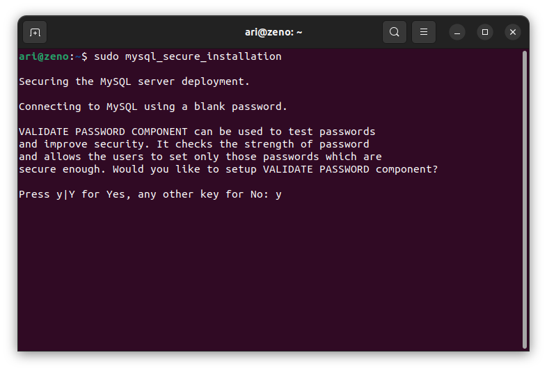
Pengguna memiliki tiga opsi untuk kebijakan kata sandi:
- 0 - low
- 1 - medium
- 2 - strong
Pilih salah satu kemudian tekan enter.

Remove Anonymous Users
Setelah instalasi, MySQL secara otomatis menggabungkan pengguna anonim, memungkinkan akses tidak terbatas tanpa akun pengguna khusus. Meskipun awalnya dirancang untuk pengujian dan instalasi yang disederhanakan, disarankan untuk menghapus pengguna ini demi alasan keamanan.

Disallow Root Login Remotely
Secara bawaan membatasi koneksi pengguna root ke mesin lokal (localhost) disarankan untuk mengurangi potensi risiko keamanan, seperti serangan brute force kredensial.

Remove Test Database
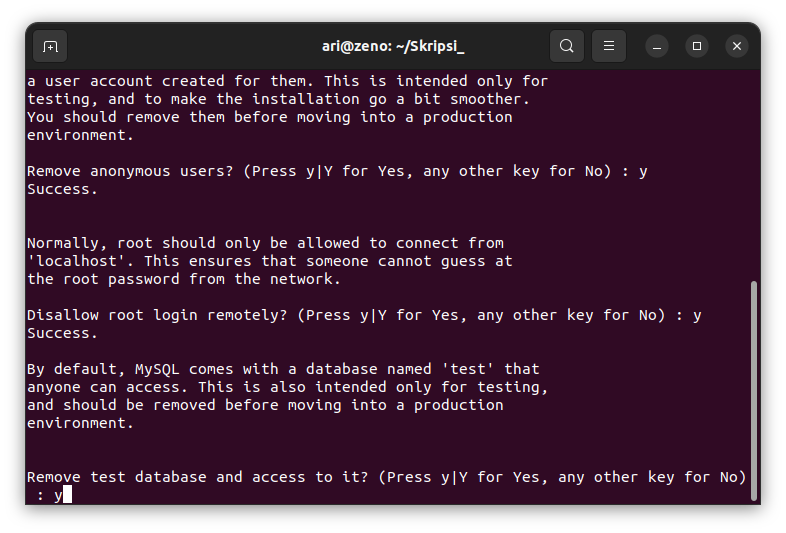
Reload Privilege Tables

3. Cek apakah MySQL Service telah berjalan
Setelah instalasi, layanan MySQL akan dimulai secara otomatis. Untuk memverifikasi bahwa server bekerja, jalankan perintah berikut sudo systemctl status mysql

4. Login MySQL
Untuk login ke MySQL gunakan perintah sudo mysql -u root

dbeaver
Instalasi Java
Untuk menjalankan program java diperlukan JDK (Java Development Kit), unduh JDK pada halaman Download Java.

Setelah selesai mengunduh JDK install paket tersebut dengan perintah sudo dpkg -i namafile.deb.

Setelah proses instalasi selesai gunakan perintah java --version untuk memeriksa versi java yang telah terinstall.

Install PHP
Untuk menginstall PHP gunakan perintah sudo apt install php php-curl. Setelah itu periksa versi PHP yang sudah terinstall dengan perintah php -V.

Instalasi Composer
Untuk menginstall Composer pastikan PHP sudah terinstall terlebih dahulu pada sistem operasi, periksa versi PHP yang sudah terinstall dengan perintah php -V.
Kemudian download composer dengan perintah curl -sS https://getcomposer.org/installer -o composer-setup.php, setelah itu install composer menggunakan perintah sudo php composer-setup.php --install-dir=/usr/local/bin --filename=composer.
Cek versi composer untuk memastikan composer sudah terinstall pada sistem operasi dengan perintah composer -V.
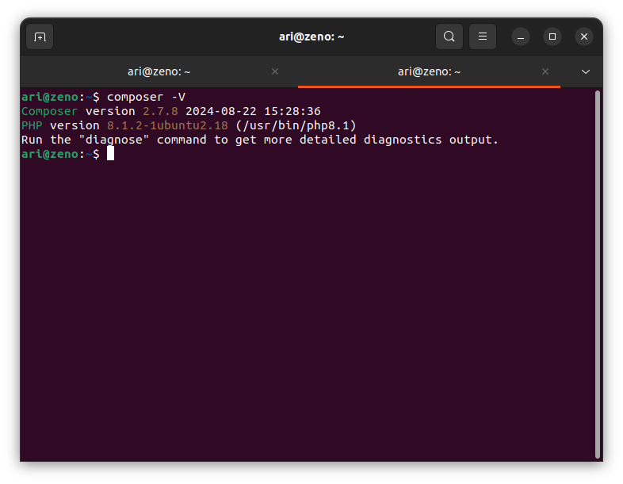
webgl
zotero
Install PHP
Untuk menginstall PHP gunakan perintah sudo apt install php php-curl. Setelah itu periksa versi PHP yang sudah terinstall dengan perintah php -V.
gimp
Instalasi Open Elearning
Unduh paket instalasi pada halaman Open Elearning. Kemudian install paket tersebut dengan perintah dpkg -i namafile.deb, berikut gambar saat installasi Open eLearning :

Kemudian berikut adalah gambar dari aplikasi Open eLearning setelah terinstal yang digunakan untuk membuat slide presentasi interaktif :

Instalasi GNS3
Pendahuluan
GNS3 (Graphical Network Simulator 3) merupakan perangkat lunak yang memungkinkan simulasi jaringan komputer secara virtual tanpa memerlukan perangkat keras fisik. Perangkat lunak ini mendukung berbagai teknologi jaringan, seperti Cisco IOS, MikroTik, Juniper, dan perangkat lain yang kompatibel dengan virtualisasi.
1. Perbarui Daftar Paket
Sebelum memulai proses instalasi perbarui daftar paket sistem dengan menjalankan perintah berikut:
sudo apt update && sudo apt upgrade -y
2. Menambahkan Repository Resmi GNS3
Tambahkan repository resmi GNS3 untuk mendapatkan versi terbaru:
sudo add-apt-repository ppa:gns3/ppa -y
Kemudian perbarui kembali daftar paket:
sudo apt update
3. Menginstal GNS3 dan Dependensi
Jalankan perintah berikut untuk menginstal GNS3: sudo apt install gns3-gui gns3-server -y Jika jendela configure ubridge muncul pilih yes. Kemudian jika instalasi berhasil output baris terakhirnya akan seperti berikut:
Processing triggers for libglib2.0-0:amd64 (2.72.4-0ubuntu2.4) ...
Processing triggers for libglib2.0-0:i386 (2.72.4-0ubuntu2.4) ...
Processing triggers for libc-bin (2.35-0ubuntu3.9) ...
Processing triggers for man-db (2.10.2-1) ...
Setting up gns3-gui (2.2.53~jammy1) ...
4. Konfigurasi Izin Pengguna
Agar GNS3 dapat berjalan dengan optimal tambahkan pengguna ke grup berikut:
sudo usermod -aG ubridge $USER
sudo usermod -aG libvirt $USER
sudo usermod -aG kvm $USER
sudo usermod -aG wireshark $USER
Kemudian lakukan restart sistem agar perubahan diterapkan :
reboot
5. Install Dynamips
Jika ingin menggunakan Dynamips (Cisco Router Emulator) install dependensinya:
sudo apt install dynamips -y
6. Install Qemu
Jika ingin menggunakan appliance berbasis QEMU install paket qemu:
sudo apt install qemu-kvm qemu-utils libvirt-daemon-system virt-manager -y
7. Menjalankan GNS3
GNS3 yang sudah terinstall dapat ditemukan pada menu show applications atau dapat menggunakan perintah berikut pada terminal:
gns3
Pada saat pertama kali menjalankan GNS3 akan muncuk jendela wizard untuk konfigurasi server, pilih “run appliance on my local computer“ kemdian klik next.

Pada jendela selanjutnya biarkan tetap default kemudian klik Next sampai terdapat tulisan:
Connection to the local GNS3 server has been successful!
8. Menambahkan Appliance
Agar dapat menggunakan berbagai perangkat jaringan tambahan perlu menambahkan appliance ke dalam GNS3.
Menambahkan Appliance dengan KVM/QEMU.
-
Unduh appliance/perangkat
Unduh appliance/perangkat yang ingin ditambakan dalam bentuk image file, berikut merupakan link untuk mengunduh appliance (dalam kasus ini router cisco 2600) :
[GNS3 Appliances](https://software.cisco.com/download/) -
Import Aplliance File
Klik file pada menu pojok kiri atas kemudian pilih new tamplate.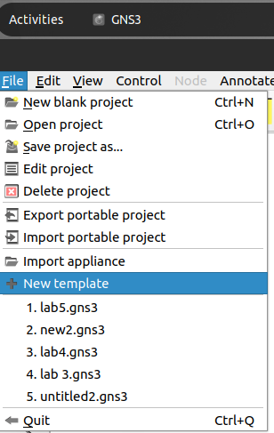
Selanjutnya pilih Install an appliance from the GNS3 server (recommendation).
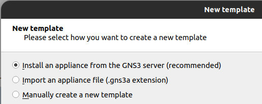
Kemudian jendela selanjutnya akan menampilkan daftar perangkat yang dapat ditambahkan (Firewalls, Guests, Routers dan Switches). Pilih perangkat yang akan di install (pada kasus ini Router Cisco 1700) kemudian klik install.

Selanjutnya jika file appliance sudah di unduh sebelumnya maka statusnya akan Ready to install.

Kemudian klik next sampai terdapat pemberitahuan bahwa appliance telah berhasil di install.

-
Verifikasi Instalasi
Jika appliance berhasil di install maka pada menu appliance kategori router akan terdapat appliance yang baru saja ditambahkan.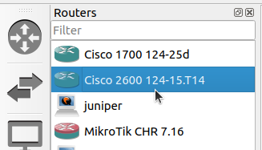
-
Uji Coba Perangkat
Tambahkan 1 buah router cisco 2600 dan 2 VPCS kedalam workspace kemudian koneksikan setiap VPCS dengan router :
• PC 1 > ethernet 0/0
• PC 2 > ethernet 1/0
Kemudian klik kanan pada router lalu pilih console untuk menambahkan konfigurasi. Berikut konfigurasi untuk router cisco 2600 :
• Masuk mode konfigurasi
enable configure terminalJika berhasil maka outputnya akan seperti berikut :
Enter configuration commands, one per line. End with CNTL/Z. R1(config)#• Konfigurasi FastEthernet0/0 (PC 1)
interface FastEthernet0/0 ip address 192.168.1.1 255.255.255.0 no shutdown exitJika berasil maka outputnya akan seperti berikut :
*Mar 1 00:14:26.404: %LINK-3-UPDOWN: Interface Ethernet0/0, changed state to up *Mar 1 00:14:27.405: %LINEPROTO-5-UPDOWN: Line protocol on Interface Ethernet0/0, changed state to up• Konfigurasi FastEthernet0/1 (PC 2)
interface FastEthernet0/0 ip address 192.168.2.1 255.255.255.0 no shutdown exitJika berhasil maka outputnya akan seperti berikut :
*Mar 1 00:20:21.097: %LINK-3-UPDOWN: Interface Ethernet1/0, changed state to up *Mar 1 00:20:22.099: %LINEPROTO-5-UPDOWN: Line protocol on Interface Ethernet1/0, changed state to up• Simpan Konfigurasi
exit write memory Berikut adalah output setelah menyimpan konfigurasi : Overwrite the previous NVRAM configuration?[confirm] Building configuration… [OK]• Konfigurasi VPCS
Pada console PC 1 atur IP dengan :ip 192.168.1.2 255.255.255.0 192.168.1.1PC 2 :
ip 192.168.2.2 255.255.255.0 192.168.2.1• Uji Koneksi
Ping dari PC 1 ke PC 2 :PC1> ping 192.168.2.2 84 bytes from 192.168.2.2 icmp_seq=1 ttl=63 time=12.978 ms 84 bytes from 192.168.2.2 icmp_seq=2 ttl=63 time=15.709 ms 84 bytes from 192.168.2.2 icmp_seq=3 ttl=63 time=16.068 ms 84 bytes from 192.168.2.2 icmp_seq=4 ttl=63 time=15.385 ms 84 bytes from 192.168.2.2 icmp_seq=5 ttl=63 time=16.071 msJika outputnya seperti diatas maka konfigurasi telah berhasil diterapkan.
Menambahkan Appliance dengan VirtualBox
-
Unduh appliance/perangkat
Unduh file appliance/perangkat jaringan yang ingin di install (dalam kasus ini router mikrotik CHR). Kunjungi laman https://mikrotik.com/download kemudian unduh file OVA template.
-
Import Aplliance File
Pada VirtualBox klik file kemudian pilih import appliance.
Selanjutnya pada kolom source file pilih file mikrotik yang baru saja di downlod dengan ekstensi .OVA. Kemudian pada pilihan setting dapat mengganti nama appliance dengan Mikrotik CHR.
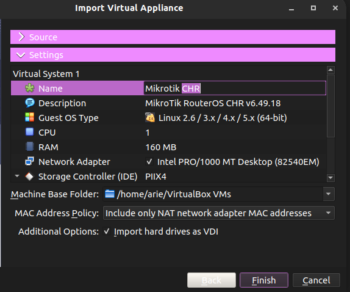
Klik finish kemudian jika import berhasil maka appliance Mikrotik CHR akan ditambahkan.
-
Mengubungkan VirtualBox Appliance dengan GNS3
Pada GNS3 pilih menu edit kemudian preferences. Selanjutnya pada menu VirtualBox VMs klik new kemudian pada pilihan VM List pilih nama machine router yang di install pada virtualBox kemudian klik finish.Setelah berhasil menambahkan maka router akan ada pada list VirtualBox VMs Template.

Klik edit pada template tersebut kemudian pilih kategorinya sebagai router.
Menambahkan Appliance dengan VMWare
-
Unduh appliance/perangkat
Unduh file appliance/perangkat jaringan yang ingin di install (dalam kasus ini router mikrotik CHR). Kunjungi laman https://mikrotik.com/download kemudian unduh file OVA template. -
Import Aplliance File
Pada VMWare klik menu file kemudian open dan pilih file .OVA.
Pada jendela selanjutnya sesuaikan nama appliance kemudian klik import.

Klik finish kemudian jika import berhasil maka appliance Mikrotik CHR akan ditambahkan.
-
Mengubungkan VirtualBox Appliance dengan GNS3
Pada GNS3 pilih menu edit kemudian preferences. Selanjutnya pada menu VMWare VMs klik new kemudian pada pilihan VM List pilih nama appliance yang di sudah diimport lalu klik finish.
Setelah berhasil menambahkan maka router akan ada pada list VMWare VMs Template.

Klik edit pada template tersebut kemudian pilih kategorinya sebagai router.
9. Membuat Simulasi Sederhana (Mikrotik CHR)
Berikut adalah topologi jaringan sederhana yang akan dibuat.
-
Menambahkan device
Untuk menambahkan device dapat dengan melakukan drag device yang tersedia ke ruang kerja kemudian hubungkan tiap device dengan link ke port yang tersedia.
Disini untuk port 1 (ether1) mikrotik tersambung ke internet, port 2 dan port 3 masing-masing terhubung ke switch. Setelah semua device terhubung jalankan semua device dengan mengklik icon start pada menu bagian atas.
-
Konfigurasi Mikrotik dengan Winbox
Buka aplikasi winbox yang terinstall pada laptop kemudian klik mac address / ip address yang muncul. Login dengan user defatl mikrotik yaitu user : admin dan passwordnya kosong. -
Konfigurasi IP
Pada winbox, klik menu ip > address. Secara otomatis port 1 akan mendapat ip dari internet karena terhubung dengan NAT pada port 1.- Port 2 : 192.168.2.1/24

- Port 3 : 192.168.3.1/24

- Port 2 : 192.168.2.1/24
-
Menambahkan DHCP Server
Pada winbox pilih ip > dhcp server. Kemudian klik DHCP Setup, pada jendela selanjutnya pilih interface yang akan dijadikan DHCP Server, disini yang pertama adalah ether 2.
Selanjutnya biarkan secara default. Untuk range ip yang di berikan bisa dimodifikasi pada jendela selanjutnya. Untuk DNS server isi dengan 8.8.8.8. Klik next sampai terdapat pemberitahuan “setup has completed successfully”.

Kemudian dengan cara yang sama lakukan untuk ether 3.
-
Cek IP client
Pada semua VPCS buka console dengan cara klik kanan > console, pada console masukkan perintah :dhcpPerintah dhcp digunakan agar pc menerima ip dari dhcp server. Kemudian untuk melihat konfigurasi dhcp yang diterima gunakan perintah berikut :
show ipBerikut output untuk PC1 :
NAME : PC1[1] IP/MASK : 192.168.2.254/24 GATEWAY : 192.168.2.1 DNS : 192.168.122.1 DHCP SERVER : 192.168.2.1 DHCP LEASE : 1650, 1800/900/1575 MAC : 00:50:79:66:68:00 LPORT : 10014 RHOST:PORT : 127.0.0.1:10015 MTU : 1500 Output untuk PC 4 : NAME : PC4[1] IP/MASK : 192.168.3.253/24 GATEWAY : 192.168.3.1 DNS : 8.8.8.8 DHCP SERVER : 192.168.3.1 DHCP LEASE : 1614, 1800/900/1575 MAC : 00:50:79:66:68:03 LPORT : 10036 RHOST:PORT : 127.0.0.1:10037 MTU : 1500Hal ini menunjukan bahwa konfigurasi DHCP Server telah berhasil. Kemudian juga dapa menguji koneksi dengan mengubungi PC dengan DHCP Server yang berbeda, contoh PC4 menghubungi PC1 dengan cara ping:
PC4> ping 192.168.2.254 84 bytes from 192.168.2.254 icmp_seq=1 ttl=63 time=3.874 ms 84 bytes from 192.168.2.254 icmp_seq=2 ttl=63 time=2.473 ms 84 bytes from 192.168.2.254 icmp_seq=3 ttl=63 time=0.863 ms 84 bytes from 192.168.2.254 icmp_seq=4 ttl=63 time=1.328 ms 84 bytes from 192.168.2.254 icmp_seq=5 ttl=63 time=1.230 ms -
Konfigurasi IP Firewal
Agar PC dapat terhubung ke internet maka perlu konfigurasi IP Firewal. Pada winbox pilih ip > firewal kemudian klik kolom NAT dan tambah rules baru dengan mengklik icon +.
Selanjut pada tab Action ubah menjadi “masquerade” kemudian klik ok.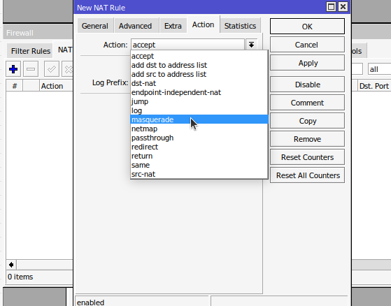
ji koneksi dengan ping ke 8.8.8.8.
C4> ping 8.8.8.8 4 bytes from 172.217.194.102 icmp_seq=1 ttl=57 time=47.240 ms 4 bytes from 172.217.194.102 icmp_seq=2 ttl=57 time=78.903 ms 4 bytes from 172.217.194.102 icmp_seq=3 ttl=57 time=44.574 ms 4 bytes from 172.217.194.102 icmp_seq=4 ttl=57 time=61.156 ms 4 bytes from 172.217.194.102 icmp_seq=5 ttl=57 time=46.509 msJika outputnya seperti diatas maka PC sudah dapat terkoneksi dengan internet.
Google Chrome
Instalasi LibreOffice
Secara bawaan Ubuntu versi 22.04 LTS sudah terpasang LibreOffice versi 7.3.2.

Jika pada sistem operasi linux anda belum terpasang LibreOffice, ikuti langkah-langkah berikut untuk memasangnya.
-
Buka Ubuntu Software.
-
Klik icon search pada pojok kiri atas aplikasi kemudian masukkan keyword "LibreOffice".
-
Pilih aplikasi yang sesuai kemudian tekan tombol install.
-
Tunggu hingga proses instalasi selesai, LibreOffice yang sudah terinstall dapat ditemukan pada menu Applications.
quran
fet
logisim
sagemath
pspp
simphy
postman
Instalasi JupyterLab
-
Buka Ubuntu Software.
-
Klik icon search pada pojok kiri atas aplikasi kemudian masukkan keyword "JupyterLab".

-
Pilih aplikasi yang sesuai kemudian tekan tombol install.
-
Tunggu hingga proses instalasi selesai, JupyterLab yang sudah terinstall dapat ditemukan pada menu Applications.

Project Libre
Install PHP
Untuk menginstall PHP gunakan perintah sudo apt install php php-curl. Setelah itu periksa versi PHP yang sudah terinstall dengan perintah php -V.